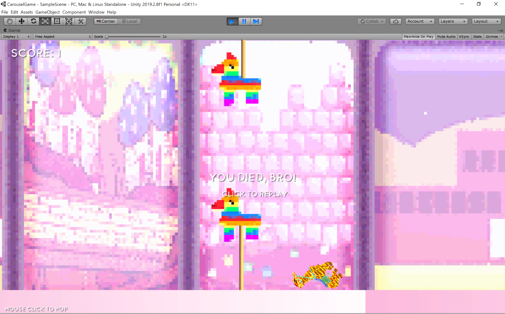
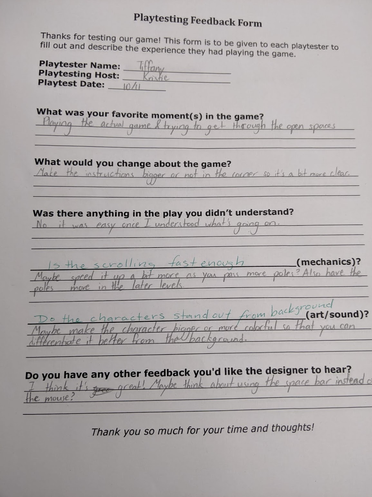
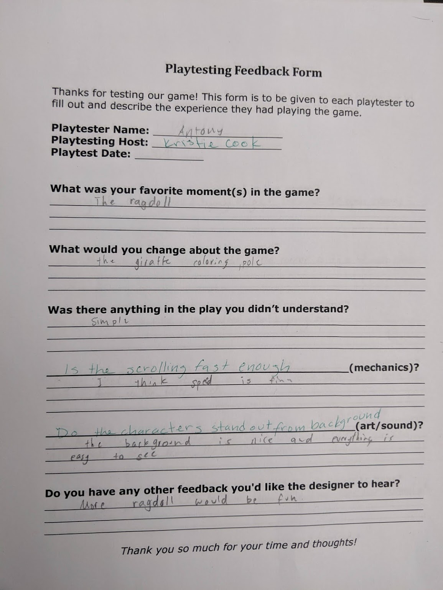

humanhybrids blog
Blog 5
Who Carousels?!: a Game
I had the role of programmer and was responsible for making the game actually run. My partner, Jonny, was the artist for this game. I had to code the game and learn how to use C# and how to specifically find out how to create the mechanics of the game. I had to learn how to make the background repeat, how to keep score, and how to make the pinata columns deadly. I used the boxed collider 2dmand the polygon collider 2d in my game. My favorite mechanic is the rigidbody 2d mechanic I used. That is what makes the giraffe sprite fall to the floor in a way that looks like a stiff object when the player dies. This is also one of the features that a couple of people had told me that they liked when they playtested it last Friday.
During the play test, I gave the gamers a questionnaire and also listened to their verbal feedback. An example of the questionnaire is above. Players overall liked the game and the way it was set up. Some feedback that was given was to make the sprite stand out more from the background. Also, players felt the speed could increase after a bit to make it harder, although the highest score any playtester had with me was 6. One playtester above thought the game should use the spacebar instead of a mouse to play the game. The playtester below thought the game was great as is and could possibly have more ragdoll.
After all the feedback I received from the playtest, I decided to change a few things:
- Increase speed as level continues
- Move some pinata columns move up and down like a carousel later in the level (use spiders)
- Make windows executable by next week
- Mouse click or space bar
- Make background move slightly faster than pinatas (parallaxing effect)
- Make the “Your Dead” text bigger.